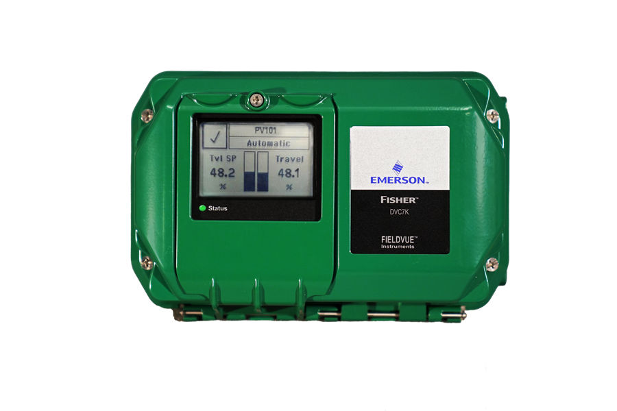
Bộ điều khiển van số FIELDVUE
Bộ điều khiển van số FIELDVUE – DVC6200, DVC6200 SIS, DVC6200f/p, DVC2000, DVC7K – định vị chính xác, chẩn đoán van trực tuyến, HART/Foundation Fieldbus/Profibus.
Bộ điều khiển van số FIELDVUE (DVC6200, DVC2000, DVC7K), positioner khí nén 3582, 3610J, bộ chuyển đổi I/P, bộ truyền vị trí, volume booster, trip valve và phần mềm chẩn đoán ValveLink.

Bộ điều khiển van số FIELDVUE – DVC6200, DVC6200 SIS, DVC6200f/p, DVC2000, DVC7K – định vị chính xác, chẩn đoán van trực tuyến, HART/Foundation Fieldbus/Profibus.
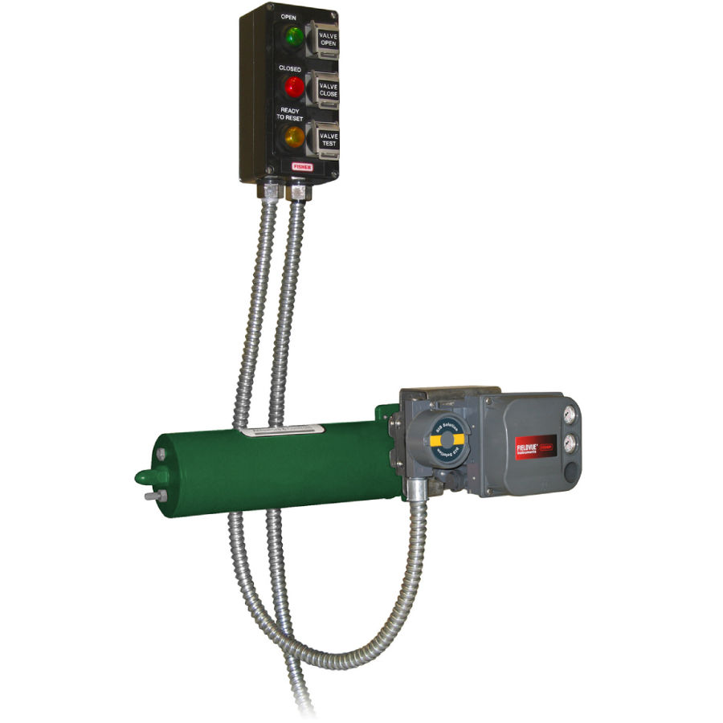
Positioner khí nén và điện – khí nén Fisher 3582, 3610J, 3570, 3660, 3710 cho van cầu và van xoay – giải pháp bền, đơn giản, dễ thay thế.
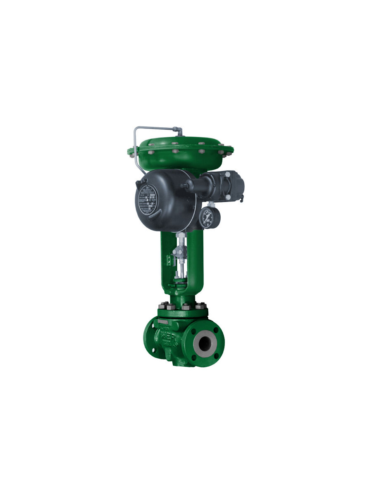
Bộ chuyển đổi dòng điện sang áp suất (I/P) Fisher i2P-100, 546, 646, 846 – chuyển tín hiệu 4–20 mA thành tín hiệu khí nén cho van và thiết bị.
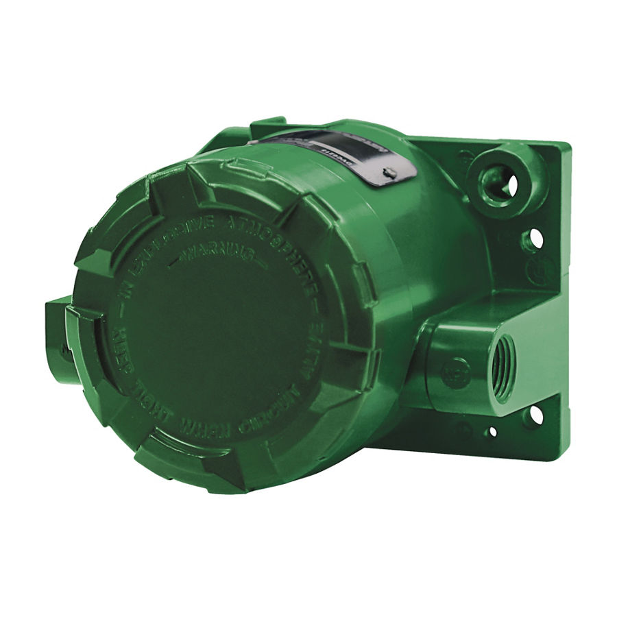
Bộ truyền vị trí 4200 và 4400 FIELDVUE – phản hồi vị trí van về hệ thống điều khiển, có tùy chọn công tắc giới hạn.
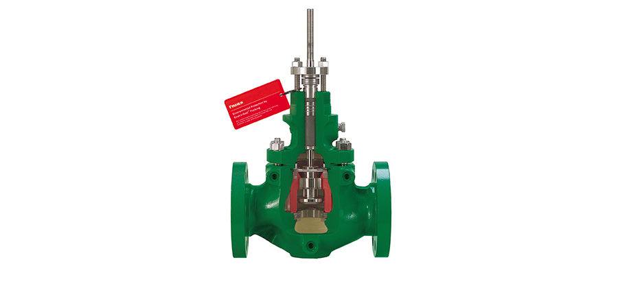
Phụ kiện van Fisher: volume booster 2625/VBL tăng tốc hành trình, trip valve 377 giữ vị trí khi mất khí, override tay 525, packing ENVIRO-SEAL.
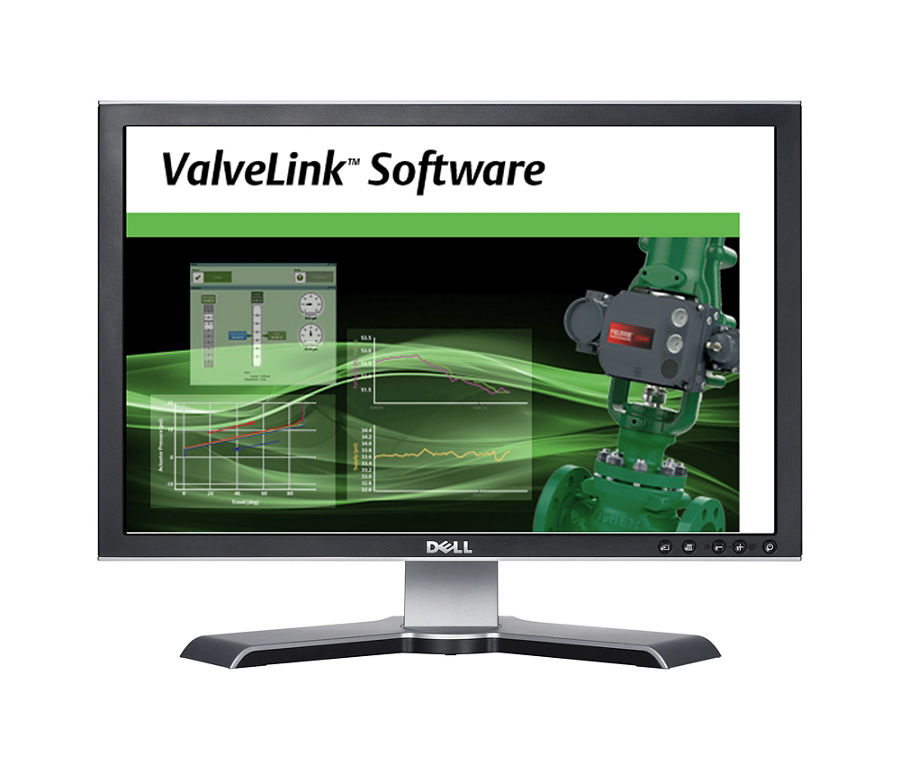
Phần mềm ValveLink, ValveLink Mobile, QUIKLOOK và LoopConnect để cấu hình, hiệu chuẩn và chẩn đoán van Fisher FIELDVUE.
Bộ chuyển đổi I/P 4–20 mA → 0,2–1,0/0,4–2,0 bar; vỏ phòng nổ; bản 546NS cho điện hạt nhân.
Bộ điều khiển van số thế hệ mới; LUI, đèn NE 107, chẩn đoán tại thiết bị; phản hồi không tiếp xúc.
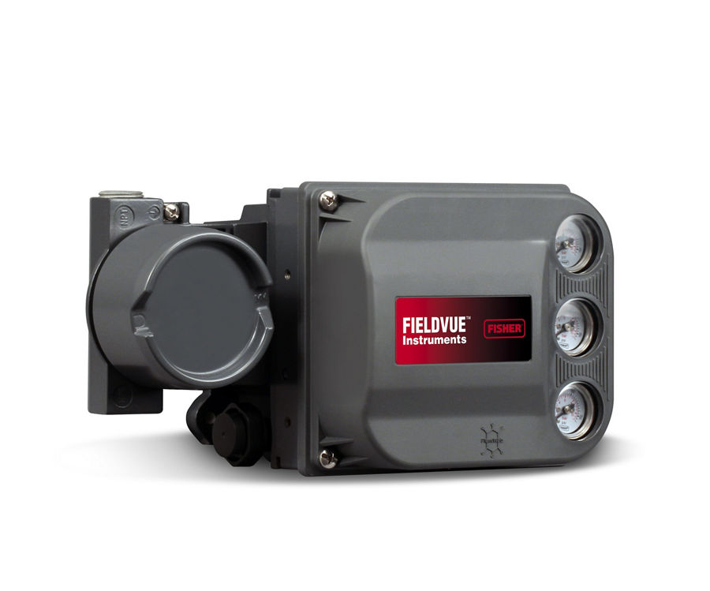
Positioner số HART chủ lực; phản hồi không tiếp xúc, chẩn đoán trực tuyến; bản lắp xa DVC6205/6215.

Positioner số Foundation Fieldbus; khối PID/AO tại thiết bị, chẩn đoán 24/7; phản hồi không tiếp xúc.
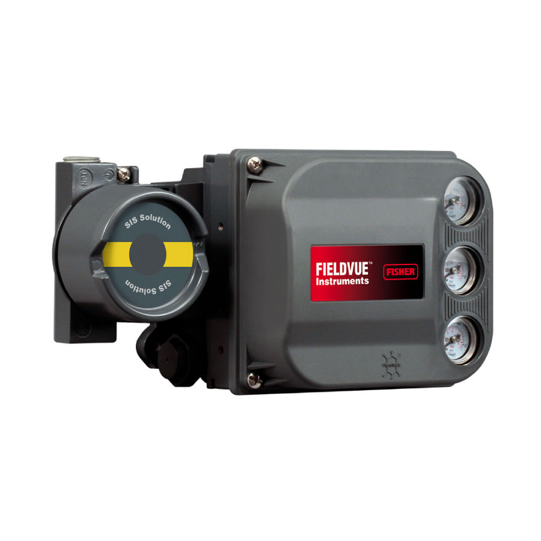
Positioner số cho van ESD/blowdown (SIS); partial & full stroke test, chống trip giả; HART.
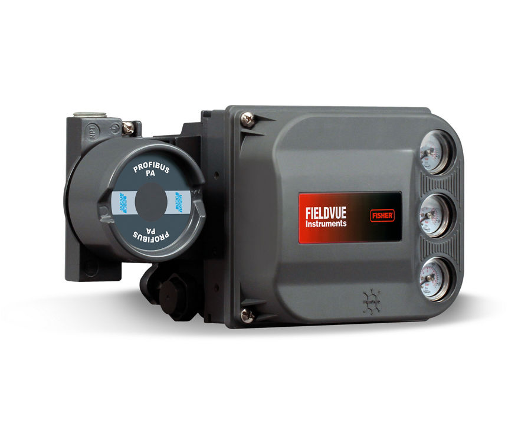
Positioner số PROFIBUS PA; khối AO/AI/DO/DI, cấu hình EDD/DTM; phản hồi không tiếp xúc.
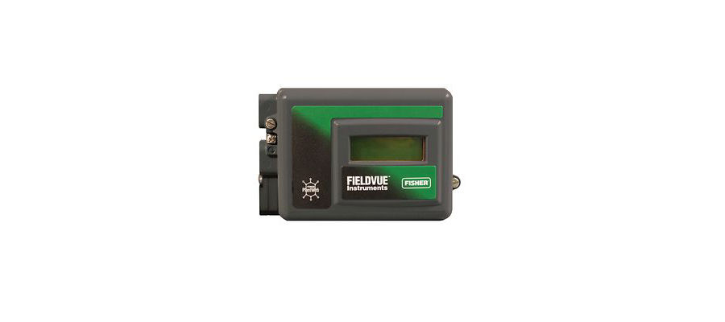
Positioner số HART nhỏ gọn, LCD + nút bấm tại chỗ, đa ngôn ngữ; phản hồi không tiếp xúc.
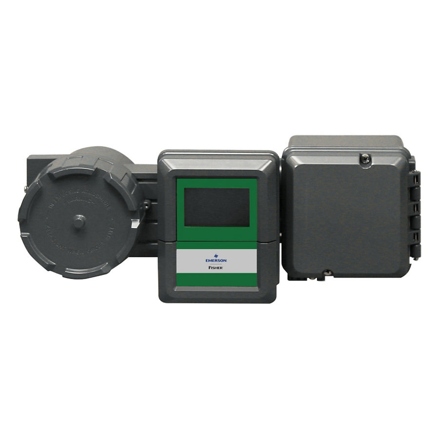
Bộ điều khiển PID điện – khí nén tại van, thay bộ điều khiển khí nén; kết nối Ethernet, phát thải thấp.
Bộ truyền vị trí số không tiếp xúc, 4–20 mA HART, 2 công tắc NAMUR; SIL 2 capable.
Trụ sở TP. Hồ Chí Minh và văn phòng Vũng Tàu đều tiếp nhận RFQ, tư vấn cấu hình và bàn giao bộ chứng từ CO/CQ; bảo hành chính hãng 12 tháng kể từ ngày giao hàng. Yêu cầu gửi trong giờ làm việc được phản hồi trong cùng ngày; giao hàng toàn quốc.
150/41 Nguyễn Cư Trinh, P. Cầu Ông Lãnh
51 Lê Văn Lộc, P. Vũng Tàu